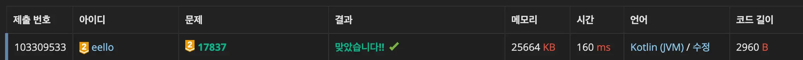

새로운 게임 2 풀이 - Kotlin
조건 정리
- 게임판 크기: N x N(4 <= N <= 12)
- 1 <= 말 번호 <= K <= 10
- 말 위에 말이 올라갈 수 있음
- 체스판의 각 칸은 흰색, 빨간색, 파란색 중 하나
- 말의 이동방향: 위, 아래, 왼쪽, 오른쪽
- 말의 이동 순서: 말의 번호 오름차순 순(1, 2, 3, ... , K)
- 턴 진행 중 말이 4개 이상 쌓이는 순간 게임 종료
- 말의 이동
- 이동하려는 칸이 흰색인 경우
- 그 칸으로 이동, 그 칸에 이미 말이 존재하는 경우 가장 위에 올림
- 말의 위에 다른 말이 있는 경우 해당 말과 그 위에 있는 모든 말이 함께 이동
- 빨간색인 경우
- 이동한 후 해당 말과 그 위에 있는 모든 말의 쌓여있는 순서를 반대로 전환
- 예: A, D, F, G가 이동하고, 이동하려는 칸에 말이 E, C, B로 있는 경우에는 E, C, B, G, F, D, A
- 파란색이거나 체스판을 벗어나는 경우
- 말의 이동 방향을 반대로 하고 한 칸 이동, 만약 이동 방향을 반대로 한 후 이동하려는 칸이 파란색인 경우에는 이동하지 않고 가만히
- 이동하려는 칸이 흰색인 경우
풀이 계획
- 이동 방향
enum class Direction(val r: Int, val c: Int) { U(), R(), D(), L() }- 반대 방향을 리턴하는 함수:
Direction.reverse(): Direction
- 반대 방향을 리턴하는 함수:
- 말:
class ChessPiece(val id: Int, var r: Int, var c: Int, var d: Direction)- 0 <= id = 말 번호-1 <= K-1
- 체스:
class Chess(val board: Array<IntArray>, val pieces: Array<ChessPiece>)- 각 칸에 존재하는 말을 관리하기 위한 자료구조: Deque or Stack
state = Array(n) { Array(n) { ArrayDeque<ChessPiece>() } }- 인덱스: 0 ← 아래 | 위 → lastIndex
- 말의 이동
// id번째 말 이동 val temp = ArrayDeque<ChessPiece>() // 이동해야 할 말 관리 val piece = pieces[id] var nr = piece.r + piece.d.r var nc = piece.c + piece.d.c if ([nr, nc]범위를 벗어나거나 || board[nr][nc] == 파란색) { piece.d = piece.d.reverse() nr = piece.r + piece.d.r nc = piece.c + piece.d.c // 풀이 후 추가 // if ([nr, nc]가 범위를 벗어나거나 || board[nr][nc] == 파란색) { return } } // id번째 말 위에 올라간 모든 말 제거 및 이동해야할 말에 저장 while (state[piece.r][piece.c] != piece) { temp.addFirst(state[piece.r][piece.c].removeLast()) } temp.addFirst(state[piece.r][piece.c].removeLast()) // id번째 말 제거 및 이동해야할 말에 추가 while (temp.isNotEmpty()) { val p = if (board[nr][nc] == 흰색) temp.removeFirst() else temp.removeLast() // borad[nr][nc] == 빨간색인 경우 위아래 전환 // 말의 위치 업데이트 p.r = nr p.c = nc state[nr][nc].addLast(p) // 체스판 상태 업데이트 }
- 각 칸에 존재하는 말을 관리하기 위한 자료구조: Deque or Stack
- 시간복잡도:
O(K)- 최대 1000번(턴)
- x K(한 턴에 모든 말 이동, 최대 10)
- x 6(이동해야할 말 + 업힌 모든 말 이동 = 최대 3개, 말 한개당 (add, remove)을 하므로 x2 = 6)
- = O(K) = 최대 60,000번
풀이
enum class Direction
private enum class Direction(val r: Int, val c: Int) {
RIGHT(0, 1),
LEFT(0, -1),
UP(-1, 0),
DOWN(1, 0),
;
lateinit var reverse: Direction
companion object {
init {
UP.reverse = DOWN
DOWN.reverse = UP
LEFT.reverse = RIGHT
RIGHT.reverse = LEFT
}
operator fun get(ordinal: Int) = entries[ordinal]
}
}
- 반대 방향으로 전환을 쉽게 하기위해 reverse 속성을 추가
operator fun get을 추가해 방향 순서에 따라 인덱스처럼 접근
일반 init vs companion object의 init
일반 init: 각 방향(UP, DOWN 등)이 만들어질 때마다 실행
companion object의 init: Direction 클래스 전체가 준비 끝난 후 딱 한번 실행되므로 이미 모든 방향이 존재하므로 안전
class Chess
프로퍼티 & 초기화
private class Chess(val board: Array<IntArray>, val pieces: Array<Piece>) {
val n = board.size
val state = Array(n) { Array(n) { ArrayDeque<Piece>() } }
init {
pieces.forEach { p -> state[p.r][p.c].addLast(p) }
}
}
- 풀이 계획처럼 체스 말의 위치를 Deque으로 관리 (Stack 처럼 사용)
init에서 최초 체스 말의 위치 세팅
게임 플레이 함수: play()
fun play(): Int {
for (turn in 1..1000) {
for (piece in pieces) {
if (move(piece) >= 4) {
return turn
}
}
}
return -1
}
- turn을 1-1000을 반복하며 체스 말을 순차적으로 이동
- 한 체스 말의 이동이 끝난 후 이동한 칸에 4개(
move()의 반환 값) 이상의 말이 있다면 즉시 turn 리턴 - 1000번의 turn 이후에도 4개 이상이 쌓이지 않았으면 -1 리턴
체스 말 이동 함수: move()
private fun move(piece: Piece): Int {
val temp = ArrayDeque<Piece>()
var (nr, nc) = piece.getNextPos()
if (!isInBounds(nr, nc) || board[nr][nc] == BLUE) {
piece.reverseDirection()
val (rnr, rnc) = piece.getNextPos()
if (!isInBounds(rnr, rnc) || board[rnr][rnc] == BLUE) {
// 양쪽 모두 파란색 혹은 한쪽 파란색 + 한쪽 범위 밖이면
return -1
}
nr = rnr
nc = rnc
}
while (state[piece.r][piece.c].isNotEmpty()) {
val p = state[piece.r][piece.c].removeLast()
temp.addFirst(p)
if (p.id == piece.id) {
break
}
}
while (temp.isNotEmpty()) {
val p = if (board[nr][nc] == RED) temp.removeLast() else temp.removeFirst()
p.moveTo(nr, nc)
state[nr][nc].addLast(p)
}
return state[nr][nc].size
}
- 체스 말을 이동하는 함수로 이동한 칸에 놓인 체스 말의 개수를 리턴 (4개 이상 시 게임을 바로 종료하기 위함)
- 계획 단계에서 놓쳤던 이동하려는 칸이 파란색 또는 범위를 벗어나는 경우 방향을 반대로 뒤집은 후 이동하려는 칸 또한 파란색 또는 범위를 벗어나는 경우에 대한 조건 추가
if (!isInBounds(nr, nc) || board[nr][nc] == BLUE) { piece.reverseDirection() val (rnr, rnc) = piece.getNextPos() if (!isInBounds(rnr, rnc) || board[rnr][rnc] == BLUE) { // 양쪽 모두 파란색 혹은 한쪽 파란색 + 한쪽 범위 밖이면 return -1 } nr = rnr nc = rnc } - 이동해야하는 말(temp)에 대해 다음 칸의 색에 따라 그대로 이동하거나 위아래를 전환해 이동
- temp의 인덱스 0 ← 아래 | 위 → lastIndex
- 예를들어, 이동해야할 말이 C이고 state[r, c] = {A, B, C, D, E, F} 인 경우 temp = {C, D, E, F}
- 다음칸 == 흰색: 아래 → 위 순서 그대로 추가해야하므로
temp.removeFirst() - 다음칸 == 빨간색: 위 → 아래 역순이므로
temp.removeLast()
- temp의 인덱스 0 ← 아래 | 위 → lastIndex
제출 결과

전체 코드
import java.util.StringTokenizer
fun main() {
val st = StringTokenizer(readln())
val n = st.nextToken().toInt()
val k = st.nextToken().toInt()
val board = Array(n) {
val line = StringTokenizer(readln())
IntArray(n) { line.nextToken().toInt() }
}
val pieces = Array(k) { id ->
val line = StringTokenizer(readln())
val r = line.nextToken().toInt() - 1
val c = line.nextToken().toInt() - 1
val d = line.nextToken().toInt() - 1
Chess.Piece(id, r, c, Direction[d])
}
print(Chess(board, pieces).play())
}
private enum class Direction(val r: Int, val c: Int) {
RIGHT(0, 1),
LEFT(0, -1),
UP(-1, 0),
DOWN(1, 0),
;
lateinit var reverse: Direction
companion object {
init {
UP.reverse = DOWN
DOWN.reverse = UP
LEFT.reverse = RIGHT
RIGHT.reverse = LEFT
}
operator fun get(ordinal: Int) = entries[ordinal]
}
}
private class Chess(val board: Array<IntArray>, val pieces: Array<Piece>) {
val n = board.size
val state = Array(n) { Array(n) { ArrayDeque<Piece>() } }
init {
pieces.forEach { p -> state[p.r][p.c].addLast(p) }
}
fun play(): Int {
for (turn in 1..1000) {
for (piece in pieces) {
if (move(piece) >= 4) {
return turn
}
}
}
return -1
}
// 이동한 칸 위에 있는 말의 개수 리턴
private fun move(piece: Piece): Int {
val temp = ArrayDeque<Piece>()
var (nr, nc) = piece.getNextPos()
if (!isInBounds(nr, nc) || board[nr][nc] == BLUE) {
piece.reverseDirection()
val (rnr, rnc) = piece.getNextPos()
if (!isInBounds(rnr, rnc) || board[rnr][rnc] == BLUE) {
// 양쪽 모두 파란색 혹은 한쪽 파란색 + 한쪽 범위 밖이면
return -1
}
nr = rnr
nc = rnc
}
while (state[piece.r][piece.c].isNotEmpty()) {
val p = state[piece.r][piece.c].removeLast()
temp.addFirst(p)
if (p.id == piece.id) {
break
}
}
while (temp.isNotEmpty()) {
val p = if (board[nr][nc] == RED) temp.removeLast() else temp.removeFirst()
p.moveTo(nr, nc)
state[nr][nc].addLast(p)
}
return state[nr][nc].size
}
private fun isInBounds(r: Int, c: Int) = r in 0..<n && c in 0..<n
companion object {
const val RED = 1
const val BLUE = 2
}
class Piece(val id: Int, var r: Int, var c: Int, var d: Direction) {
fun getNextPos() = (r + d.r) to (c + d.c)
fun moveTo(nr: Int, nc: Int) {
r = nr
c = nc
}
fun reverseDirection() {
d = d.reverse
}
}
}